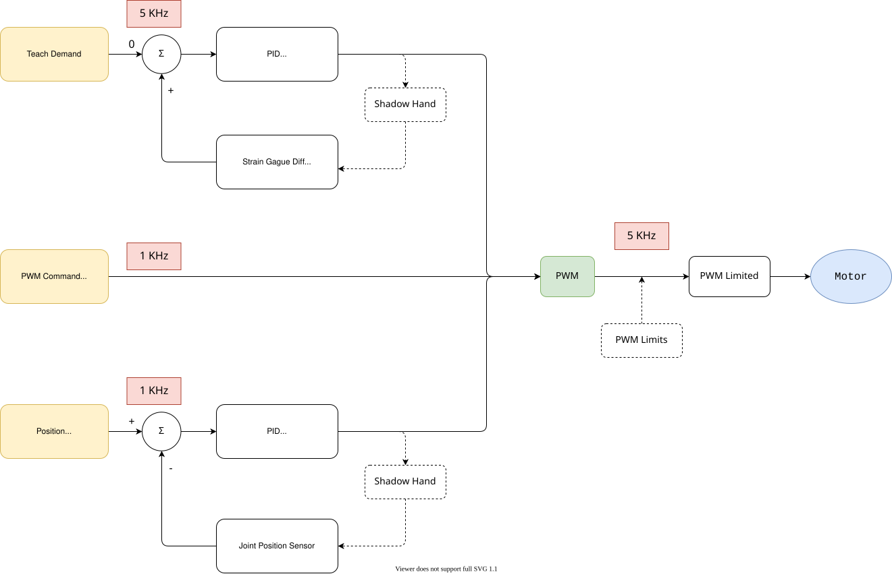

Shadow Hand
Contact Force Estimation
\[l_i = l_i(\boldsymbol{\theta}_i)\]
Direct Estimation
\[\boldsymbol{f}_i = \big( J_i^\top \big)^{-1}\, \boldsymbol{\tau}_i\]
Optimization
Contact Force Estimation
\[l_i = l_i(\boldsymbol{\theta}_i)\]
Direct Estimation
\[\boldsymbol{f}_i = \big( J_i^\top \big)^{-1}\, \boldsymbol{\tau}_i\]
Optimization
\[\begin{split}\begin{align*}
& \min_{\boldsymbol{f}_i} \| J_i^\top \boldsymbol{f}_i - \boldsymbol{\tau}_i \|^2 \\[1em]
\text{s.t.} \quad & \\
& \boldsymbol{f}_i^\top \hat{\boldsymbol{n}}_i \geq 0, \\[1em]
& \frac{\boldsymbol{f}_i^\top \hat{\boldsymbol{n}}_i}{\|\boldsymbol{f}_i\|} - \cos(\arctan(\mu)) \geq 0.
\end{align*}\end{split}\]
Control


Terminal Command
1. Switch control mode
rosservice call /teach_mode "teach_mode: 0 robot: 'right_hand'"
- teach_mode (int)
0:TRAJECTORY_MODE(default)1:TEACH_MODE2:POSITION_MODE3:GRASP_MODE
- robot (string)
'right_hand'(the one we are using)'left_hand''right_arm''left_arm'
Example: switch to position mode
rosservice call /teach_mode "teach_mode: 2 robot: 'right_hand'"
2. Send position command
Only works in position mode.
rostopic pub /sh_rh_mfj3_position_controller/command std_msgs/Float64 "data: 0.0"
data: joint angle (radian)
3. Send trajectory command
Only works in trajectory mode.
trajectory_msgs/JointTrajectory "header: seq: 0 stamp: secs: 0 nsecs: 0 frame_id: '' joint_names: - '' points: - positions: [0] velocities: [0] accelerations: [0] effort: [0] time_from_start: {secs: 0, nsecs: 0}"stamp: ros current time ros::Time(0) joint_names: string [24] positions: double[24] velocities: double[24]